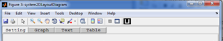

This class is used to define the child windows which are used as dialog boxes to input parameters and display output results (graphical, text or tabular) to the user during analyzing optical systems using the toolbox.
Number of Properties: 1
Number of Methods: 6
Design Philosophy
All child windows shall be an instances of a single class, the AODChildWindow class, so that they will have uniform layout throughout the toolbox. Defining all child windows as a single class file allows sharing of UI controls among the child windows when necessary. For instance, the setting panel of a child window to trace a scalar ray and polarized ray will have text boxes to accept the normalized field points coordinates and the normalized pupil coordinates in common. So it will be enough to define those shared UI controls only once and use in both windows.
Similarly all child windows will have "Ok" and "Cancel" buttons but they perform different actions for different windows. The buttons are defined only once and their call backs will be determined using switch case statements in the callback functions defined for the buttons.
Windows Description
Child windows are those windows which are displayed on request and are used to perform some analysis on the optical system or other optical components. All the children windows are made to have the same format in order to keep consistency throughout the toolbox. All windows have got four tabs as shown below.

Created with the Personal Edition of HelpNDoc: Free HTML Help documentation generator